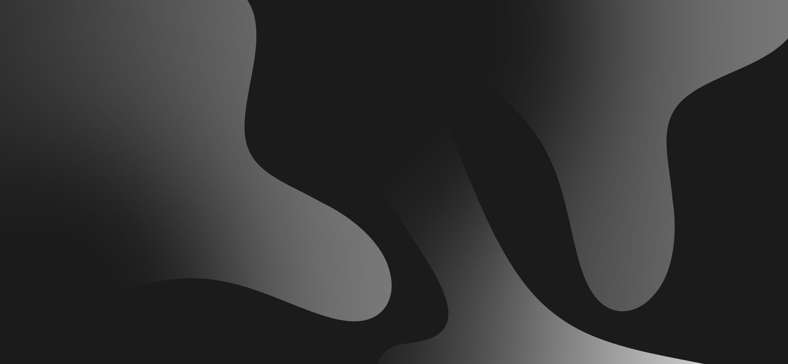

LIVE
elfleoncha
DEV // STK | BCN
> user.bio:
fleoncha@system:~$ initializing_bio... COMPLETED:|
PROJECT_LOG
CORE_CAPABILITIES
HTML/CSS
JAVASCRIPT
REACT
UI/UX

DEV // STK | BCN
fleoncha@system:~$ initializing_bio... COMPLETED:|